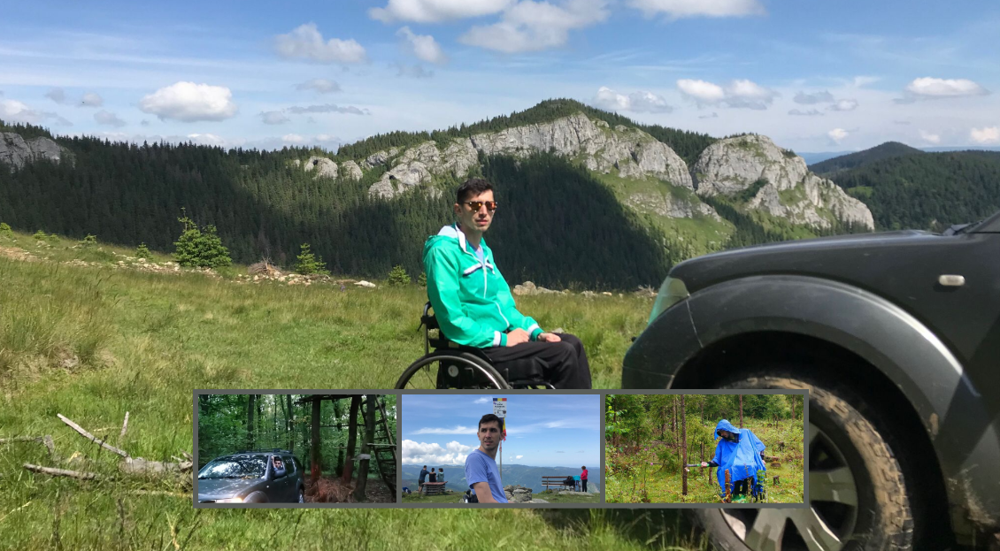

There's nothing more delightful than the peace of nature, away from the hustle and bustle of the city. My love for the wilderness drove me to embark on the adventure of light overlanding. Whether I'm tackling rugged trails or camping under a starry sky, I find immense joy in these escapes, discovering the beauty and tranquility that only nature can offer
